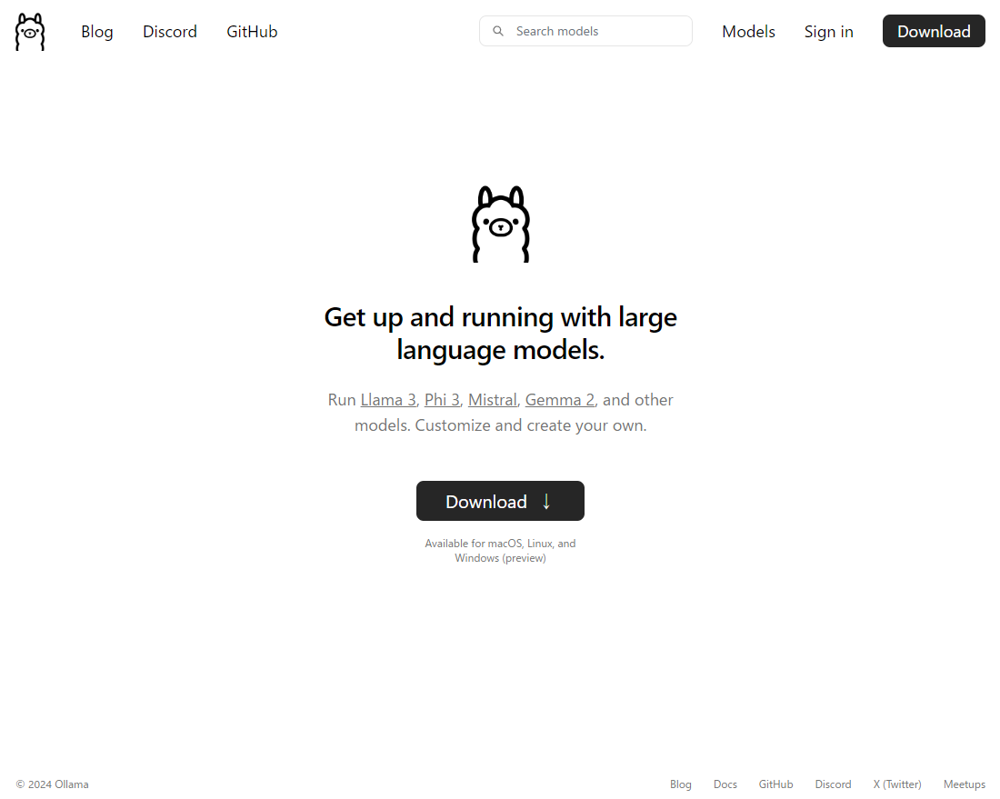
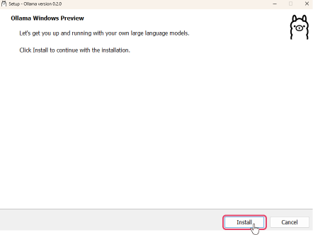
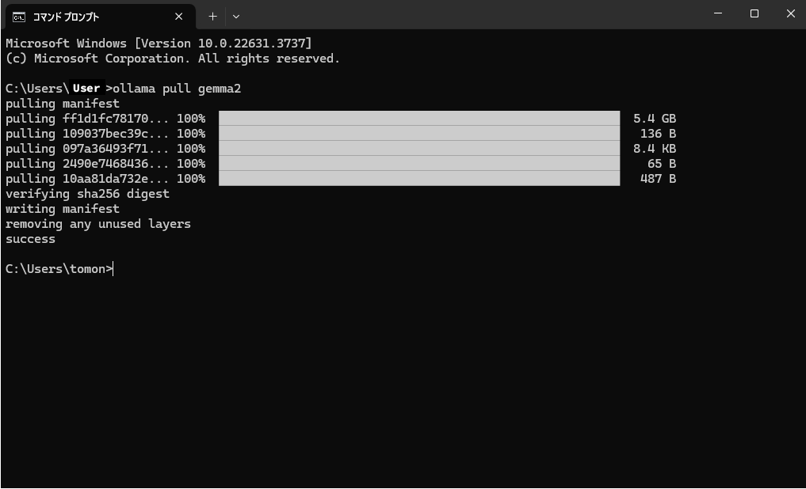
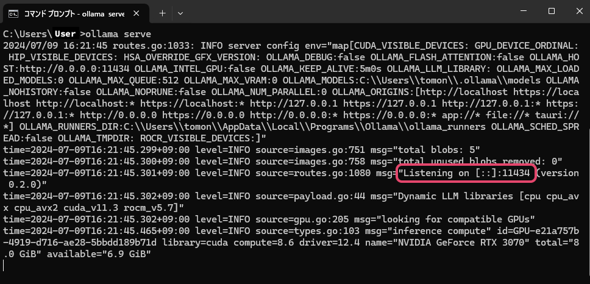
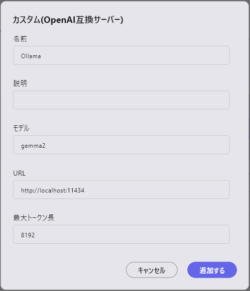
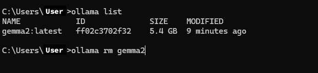

Ollamaを使用したカスタムLLM構築
Ollamaのインストール
https://ollama.comよりOllamaをインストールしてください。

Ollamaの起動（Windows）
インストールした「OllamaSetup.exe」を起動し、インストールをします。

インストールが完了したら、コマンドプロンプトを起動してパスが通っていることを確認します。
コマンドプロンプトでollama --helpを実行し、次のようなヘルプ画面が表示されることを確認してください。
Large language model runner
Usage:
ollama [flags]
ollama [command]
Available Commands:
serve Start ollama
create Create a model from a Modelfile
show Show information for a model
run Run a model
pull Pull a model from a registry
push Push a model to a registry
list List models
ps List running models
cp Copy a model
rm Remove a model
help Help about any command
Flags:
-h, --help help for ollama
-v, --version Show version information
Use "ollama [command] --help" for more information about a command.
LLMのダウンロード
ローカルで動かしたいLLMを
ollama pullのコマンドでダウンロードします。 例：Googleのgemma-2-9Bをダウンロードする場合、コマンドプロンプトにollama pull gemma2と入力します。

- 他のPCからもこのローカルLLMにアクセスしたい場合はコマンドプロンプトで
set OLLAMA_HOST=0.0.0.0を実行し、OLLAMA_HOSTの環境を「0.0.0.0」に設定します。
- 他のPCからもこのローカルLLMにアクセスしたい場合はコマンドプロンプトで
コマンドプロンプトで
ollama serveを実行することでLLMを起動させます。

- 「Listening on [::]:11434」と表示されている場合は他のPCからもアクセス可能です。
- 「Listening on 127.0.0.1:11434」の場合はそのPC内からのみアクセスできます。 ここの「11434」の数値がポート番号となり、aillia DX Insight内での設定に使用します。
aillia DX InsightでカスタムLLMの登録
詳しい設定画面の呼び出し方はこちらをご参照ください。

- 名前：使用するLLMの名称 (UI表示にのみ使用するため何でも構わない)
- 説明：必要に応じてメモとして使用
- モデル：ダウンロードしたモデルの名称（今回の例ではgemma2）
- URL(*)：
ollama serveで表示されたポートのURL（今回の例ではhttp://localhost:11434） - 最大トークン長：gemma-2-9Bの場合、「8192」となります。
(*)未記入の場合、HTTPの接続エラーになります。
ダウンロードしたLLMの削除
LLMが容量を圧迫する場合や、間違えたモデルをダウンロードしてしまった場合、以下の手順でLLMを削除することができます。
- コマンドプロンプトで
ollama listを実行すると、ダウンロード済みのモデルが一覧で表示されます。 - コマンドプロンプトで
ollama rm モデル名を実行することでダウンロード済みのモデルを削除をすることができます。
